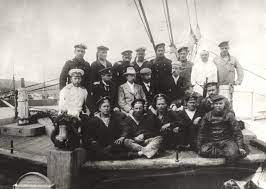

It was built in november 1998, the first piece of the ISS was launched from Russia, the Zarya (control module).
About two weeks later, the space shuttle Endeavour meet Zarya in orbit. The space shuttle was carrying the U.S. Unity node. The crew attached the Unity node to Zarya.
The Zarya Module, also known by the technical term Functional Cargo Block and the Russian acronym FGB, was the first component launched for the International Space Station. The U.S. funded and Russian-built Zarya